自组织的数据可视化和降维方法：SOM、SSM、FLAS
# 自组织映射 Self-Organizing Maps
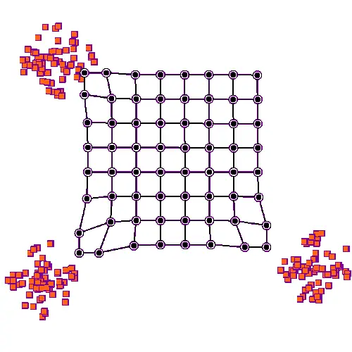
Self-Organizing Maps(SOM) 自组织映射，又称为自组织映射神经网络，或自组织竞争神经网络。 是神经网络的一种，用于将相互关系复杂且非线性的高维数据，映射到具有简单几何结构及相互关系的低维空间中展示。 低维映射能够反映高维特征之间的拓扑结构。
SOM是一种无监督的人工神经网络。不同于一般神经网络基于损失函数的反向传递来训练，它运用竞争学习 (competitive learning) 策略,依靠神经元之间互相竞争逐步优化网络。且使用近邻关系函数 (neighborhood function) 来维持输入空间的拓扑结构。
主要用于实现高维数据可视化，其降维功能还可以聚类，分类，特征抽取等任务但精度不高。
# SOM的特点
- 和PCA区别：PCA主要针对线性相关性进行降维，SOM没有线性相关性的要求，因此更适合非线性数据的降维
- 和K-means的区别：K-means虽然不要求数据线性分布，但是其聚类边界还是直线，而SOM的聚类边界是任意形状

说白了就是SOM有神经网络拟合任意函数的特性所以更加自由灵活
比如要有分布在球面附近的一些三维数据，在三维中他们分得很开：
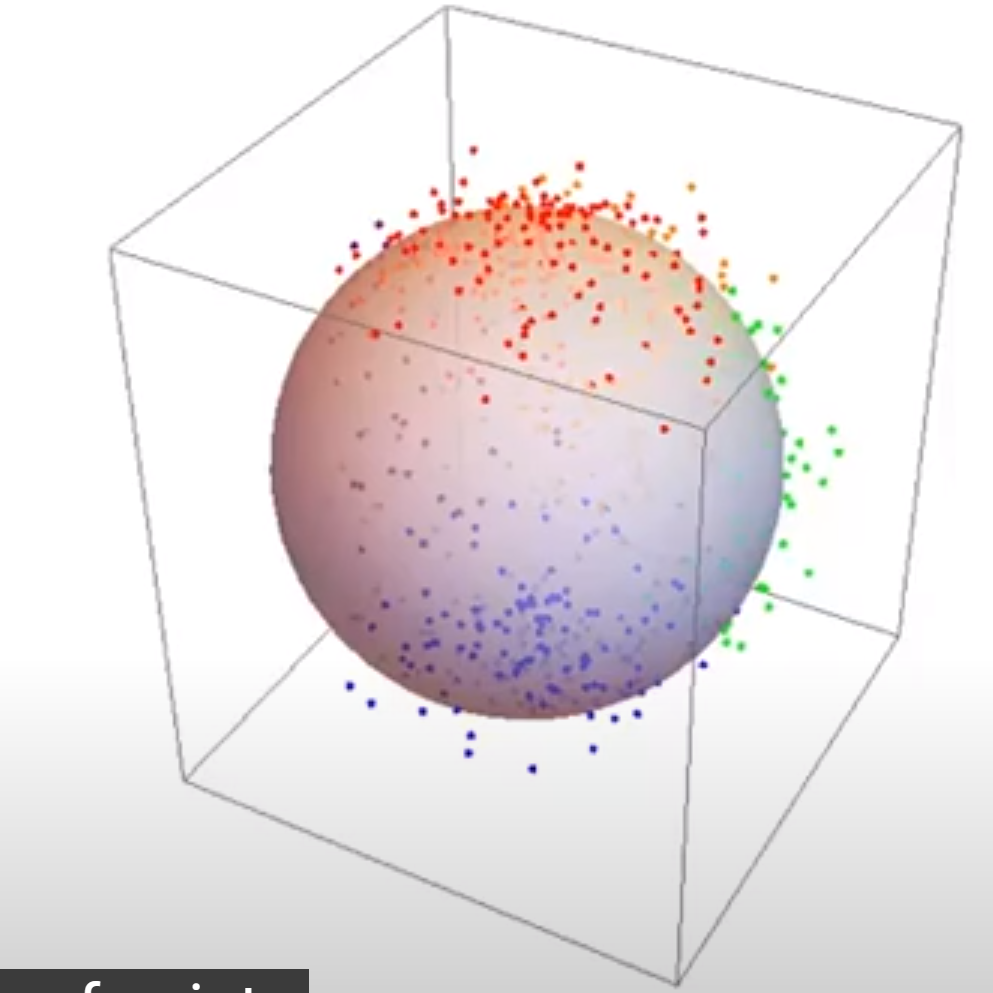
要将这些数据降至二维。
用PCA效果：可以看到只有离得较远的红蓝可以分得很开，另外三种颜色的混一起了
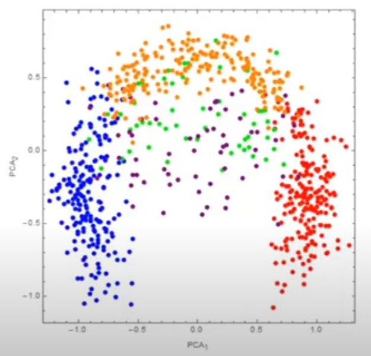
在三维视角看，PCA就是在空间中放了个平面然后投影，那当然搞不好这种非线性分布的数据。 如果只有红蓝两个的颜色这个PCA还算效果不错。
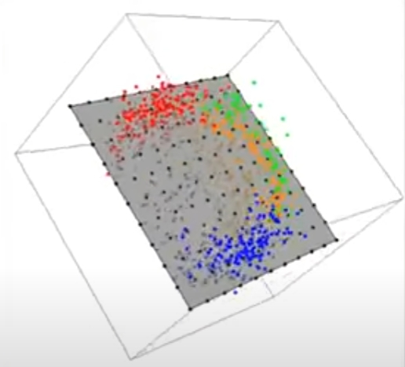
# SOM结构
原始n维数据x={x1,x2,…,xn}对应输入层n个节点，输出层X×Y个节点，每个输出层节点(i,j)都有n个权值Wi,j={wi,j,k∣k∈[1,n]}和输入层节点相连，共X×Y×n个权值：
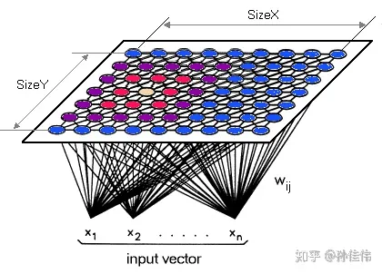
竞争层也可以有更高的维度。不过出于可视化的目的，高维竞争层用的比较少
其中，二维平面通常有2种平面结构：Rectangular和Hexagonal
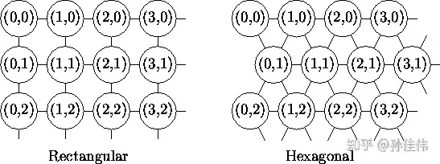
竞争层SOM神经元的数量决定了最终模型的粒度与规模；这对最终模型的准确性与泛化能力影响很大。 经验公式：竞争层X=Y=5N，N为训练样本个数
# SOM推理
对于输入向量x：
- 计算x在每个节点(i,j)上的值hi,j=∥Wi,j−x∥（和权值之间的欧氏距离）
- 输出y=argmaxi,jhi,j为hi,j值最小的点的坐标（欧氏距离最小的点，又称优胜节点(winner node)或BMU(best matching unit)）
所以每个高维输入x都对应了一个二维坐标(i,j)，于是实现了数据的降维。
# SOM和可视化
从另一个角度看SOM的推理过程：
- 权值Wi,j可以看作是像素(i,j)的“颜色”
- hi,j=∥Wi,j−x∥就可看作是输入的x在和所有像素的“颜色”计算相似性
- 最后的输出y=argmaxi,jhi,j就是相似性最大（“颜色”最相近）的像素位置。
而可视化的过程，就是把训练得到的这个权值Wi,j作为颜色摆在一张X×Y的图像上。
比如，输入是三维数据的情况下，权值Wi,j也就是三维，正则化后就是RGB，可以直接摆在图上：
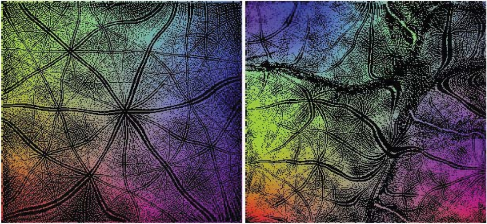
（图片来自Emergent Patterns in Self-Organizing Maps，图中的黑色区域表示训练数据集里没有数据对应到这个像素点）
# SOM训练
SOM训练过程本质上就是在不断更新上面这张图片上各点的颜色，所以别把它当成神经网络，抛弃权值的概念而按照更新颜色的思想来讲解会更好理解。
超参数：邻域半径σ
开始前随机初始化X×Y×n个像素的颜色，然后iterate执行下面的步骤：
- 随机取一个输入样本x
- forward: 计算x的SOM输出(i,j)（与输入样本最相近的颜色所在的像素位置）
- backward(更新颜色): 让(i,j)附近的像素颜色和x的差距减小，距离(i,j)越远更新力度越小，如下图
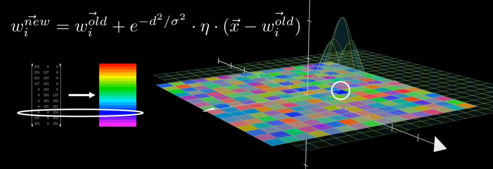 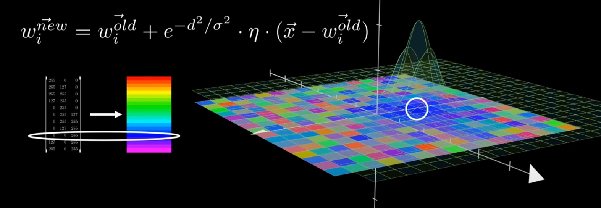
# SOM的涌现性
Emergent Patterns in Self-Organizing Maps
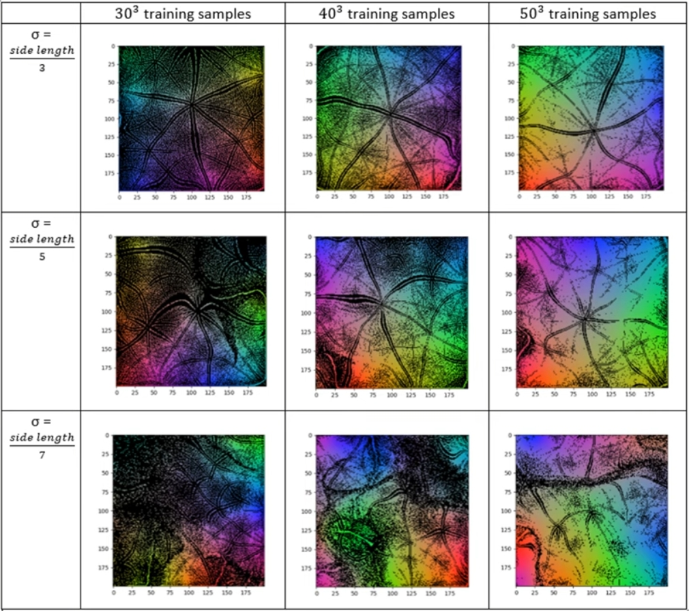
# 更进一步：Self-Sorting Map
论文：Self-Sorting Map: An Efficient Algorithm for Presenting Multimedia Data in Structured Layouts,IEEE Transactions on Multimedia, 2014
Given a set of data items and a dissimilarity measure between each pair of them, the SSM places each item into a unique cell of a structured layout, where the most related items are placed together and the unrelated ones are spread apart.
显然，SOM并不能保证每个训练样本都有一个独立的编号，也不能保证最终的图上的像素值与训练样本完全相等。 而Self-Sorting Map(SSM)正如其名，是按照给定的dissimilarity measur对输入进行的排序，可以保证每个训练样本都有自己的ID，且出来的图上像素值与训练样本完全相等。
Instead of solving the continuous optimization problem that other dimension reduction approaches do, the SSM transforms it into a discrete labeling problem.
并且因为是“排序”，不是SOM那种“训练”和“拟合”，所以构建SSM也不需要像SOM那种iteration求解优化问题，而是一个离散的贴标问题。
典型地，SSM可以做到下面这种效果，即在Self-Organizing的同时还能保证表达数据的精准无误：
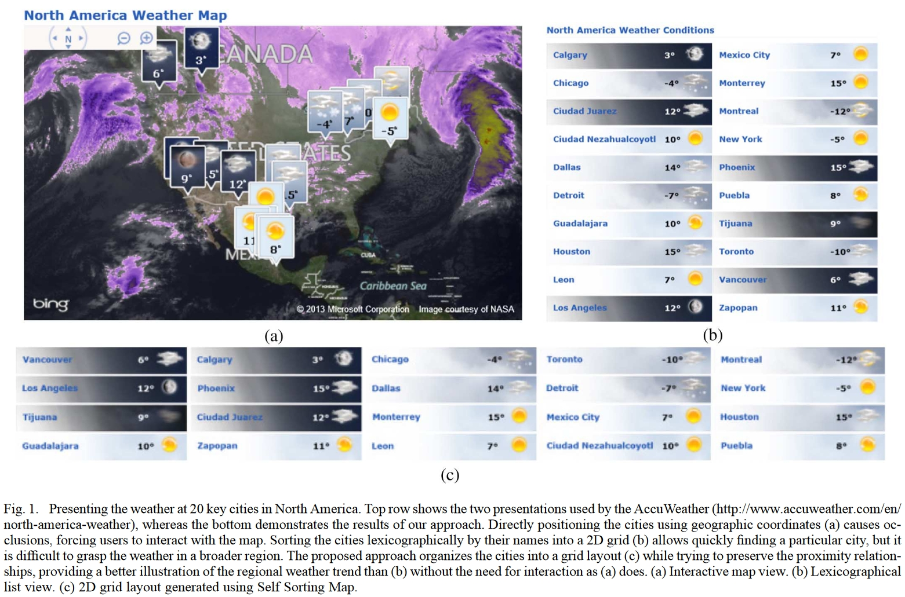
其中的图(a)是在地图上标注，图标会重叠，不好看；图(b)是按首字母规则排序，没法按天气聚类，也不好看；图(c)是Self-Sorting Map二维情况，既有按地理位置聚类又有按地域聚类，很棒。
# 问题建模
不同于SOM的连续优化方案，SSM将问题建模为一个打标签问题(labeling problem)：
- 待排序的数据集合记为Ω；集合中的元素为向量，其维度相同，下文中的s、t、u、v都表示Ω中的元素
- 集合中数据不相似性(dissimilarity)度量记为δ(⋅,⋅)；对于∀s∈Ω，δ(s,s)=0、δ(s,t)≥0
- 数据在图像上的排布方案记为M，M中有m个cell，m≥∣Ω∣
- 在排布方案M中，每个元素s都有会被分配一个位置Ls，这个位置的坐标为P(Ls)
于是，SSM的优化问题定义为：
Margmax∀s,t∈Ω∑σPσδ(∥P(Ls)−P(Lt)∥−Pˉ)(δ(s,t)−δˉ)
其中，Pˉ和δˉ分布表示图像上的像素点之间距离的均值和像素点的不相似性均值，σP和σδ是它们的方差。
显然，这里Pˉ和σP只和图像的尺寸有关、δˉ和σδ只和元素有关，都和排布方案M没有关系，可以看作是常量。 于是对于求和子式，使其最大的方法就是在δ(s,t)大的时候让∥P(Ls)−P(Lt)∥也尽可能大、在δ(s,t)小的时候让∥P(Ls)−P(Lt)∥尽可能小
所以这个式子的含义其实就是要相似性大的聚在一起，相似性小的相互远离。
# 问题求解1：s是标量且排布方案M是一维的情况
此时，SSM退化为一个排序问题。 现有很多排序算法，但是无法扩展到高维，作者提出了自己的排序算法，虽然复杂度比现有算法高但是可以扩展到高维：
第一步：数组分两个大小相等的块，前一块中的cell都与后一块相同位置的那个cell比大小，前一块的cell如果小了就和后一块的cell交换位置
SSM first splits all cells into 2 blocks. Numbers in the first block are paired up with the ones at the corresponding cells of the second block. The two numbers in each pair (s,t) are compared against each other and an exchange is performed if s>t. After all pairs are processed in parallel, the first stage is completed.
第二步：两个块再等分为4个块，块1和2、块2和3、块3和4依次执行第一步中相同的比较和交换操作。和冒泡排序很像，小的cell被依次换到了后面，但是块与块之间是交换排序，并且只冒了一次泡没有执行很多轮。
The second stage further splits each block in two, resulting in four smaller blocks. Corresponding cells in adjacent (even, odd)-numbered blocks are first compared and swapped if necessary, followed by corresponding cells in adjacent (odd, even)-numbered blocks. For example, block 1 and 2 are paired with each other first for swapping and then block 2 and 3 are paired. The even-odd swap and odd-even swap alternates until the process converges, i.e., all data at the corresponding cells of different blocks are sorted.
第三步：一直细分执行第二步，直到不可再分
The process then continues to the next stage by dividing each block into two, until the final stage is reached where all blocks contain one cell only.
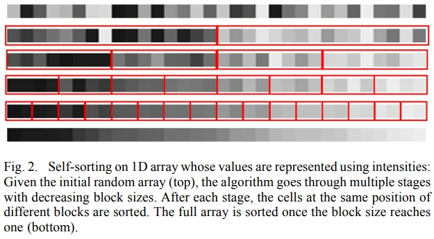
简单分析可知，划分为b块每块有bn个元素，每一步算法要比bn(b−1)次，复杂度为O(n)，共约log(n)轮，综合算法复杂度为O(nlog(n))。
这个算法真能保证正确排序吗？似乎不能？不过看后面的扩展也不需要正确排序。本文的算法都没有严格的数学证明，并不能达到最优，非常启发式。
# 问题求解2：s是矢量且排布方案M是一维的情况
s从标量变矢量，就没法直接比大小了，需要换一种方法决定两个数是否需要交换。于是，还是基于上面的那个交换式的排序方法，作者修改了一下决定是否交换的策略。
对于某个分块Bi，定义Ω(Bi)为它的临近分块的集合，进而定义一个“loss函数”：
Ti=∣Ω(Bi)∣1Bj∈Ω(Bi)∑∣Bj∣∑s∈Bjs
可以看出，这里∣Bj∣∑s∈Bjs的结果是临近分块Bj中的元素s各维度的均值组成的向量；∣Ω(Bi)∣1∑Bj∈Ω(Bi)是对Bi的所有临近分块这个均值向量再求一层均值。嗯，很均。
接下来，就根据这个Ti决定要不要交换：
(s,t)argmin(∥s−Ti∥+∥t−Ti+1∥)
显然，这个式子中的两个差∥s−Ti∥+∥t−Ti+1∥就是s和t和临近分块之间的相似性；(s,t)argmin就是要让s和t换到和它们的值更接近的分块中去。
这里的临近分块的选择可以自定义：
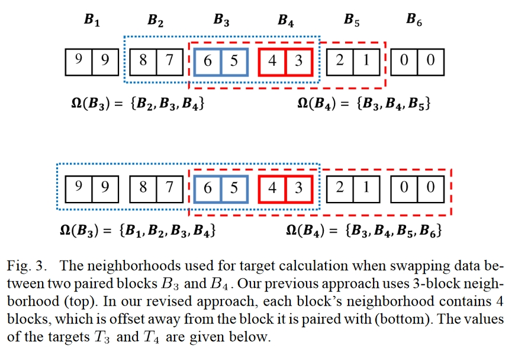
于是这样把s和t换到了和它们的值更接近的分块中，个分块中的值也就更接近了，从而达到了相近值放一块的效果：
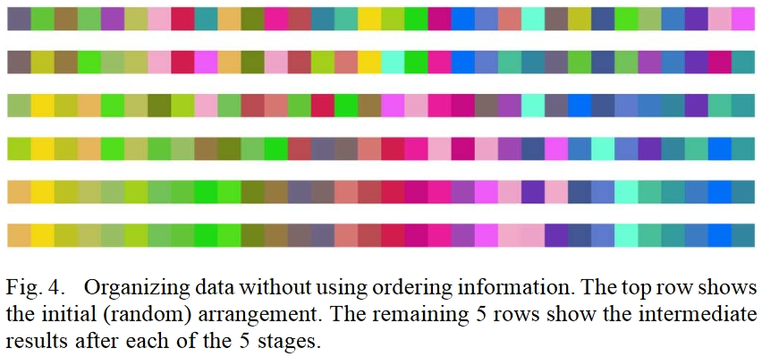
# 问题求解3：s是矢量且排布方案M是二维的情况
再进一步，排布方案也变成二维，那么比较就得在上下左右两个维度进行，交换的方式也就不只有换或者不换，而是上下左右中共4个可交换cell的共4!=24种排列组合。
比如，下图是一个第二轮操作的例子，图被划分为四大块，每块里有四小块，这四大块已经在第一轮完成了交换操作，这里的第二轮是要在大块内对小块间进行交换操作。和之前同样的思想，所有右上角的cell就只和其他块的右上角cell进行交换，即每个cells（红色标记）只考虑和附近位于块中相同位置的3个cellt,u,v（黄色标记）进行交换，于是共4!=24种排列组合：
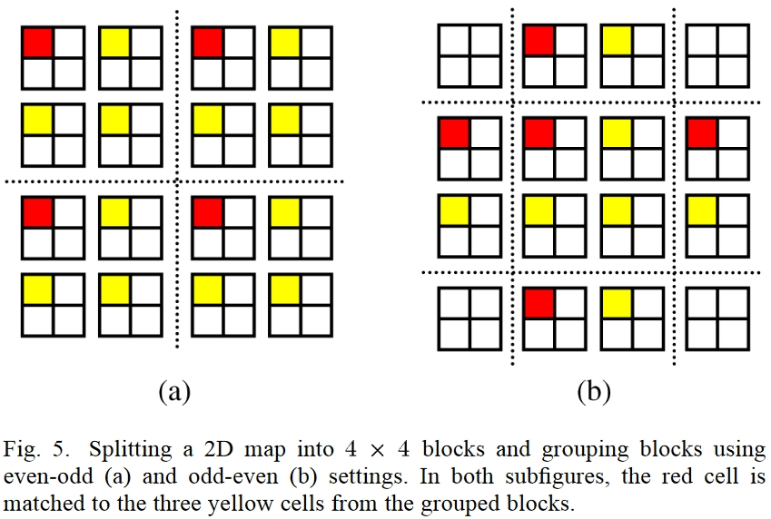
对于是否要交换的决策，这里作者进一步对相似性的概念泛化为dissimiliarty函数δ(⋅,⋅)，并用区域内与所有其他cell整体相似性最高的值作为Ti：
Ti=t∈Ω(Bi)argmin⎝⎜⎛s∈Ω(Bi)∑δ(s,t)⎠⎟⎞
进而，在于上述(s,t,u,v)的4!=24种排列组合中找最优解：
(s,t,u,v)argmin(δ(s,Ti,j)+δ(t,Ti+1,j+δ(u,Ti,j+1)+δ(v,Ti+1,j+1)))
# 进一步正则化
给Ti加点料就能实现让指定区域趋近于指定颜色，比如给某些区域的Ti加点颜色让指定颜色的cell向指定区域聚集：
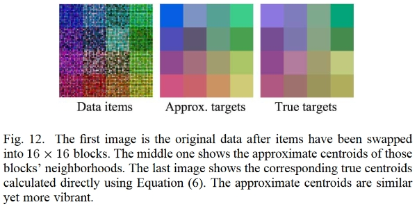
# 实验
总之就是非常炫酷
简单数据集：
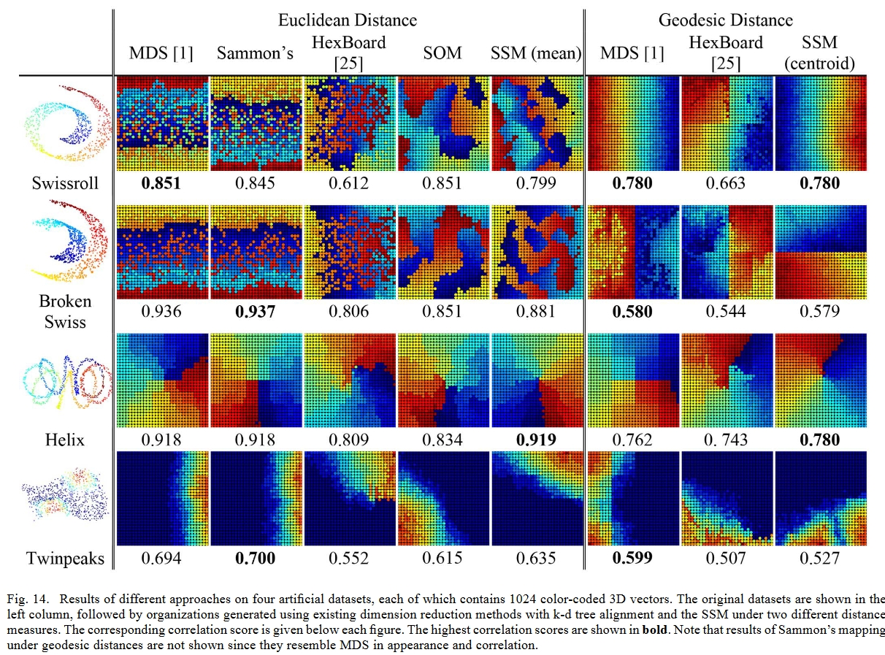
压缩不规则材质：
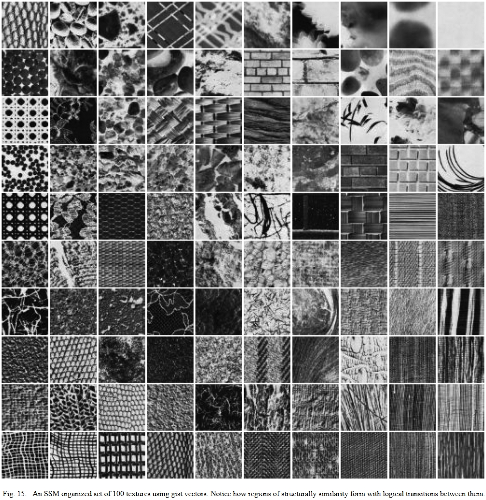
炫就完事了：
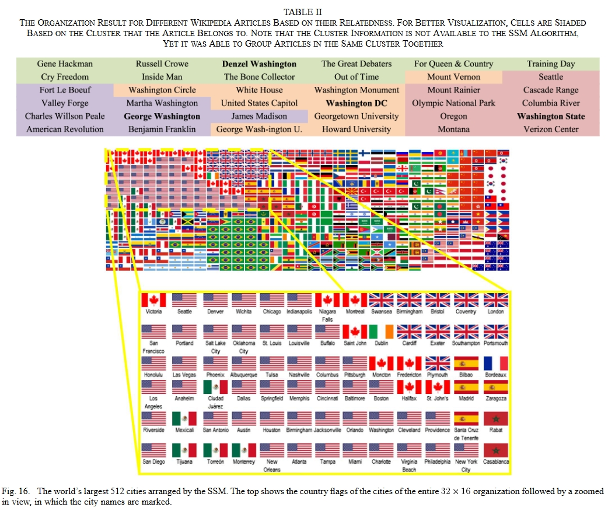